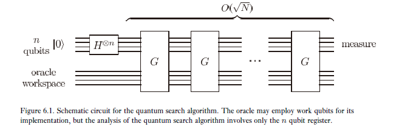
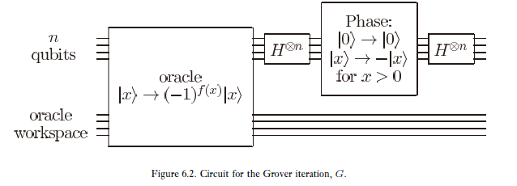
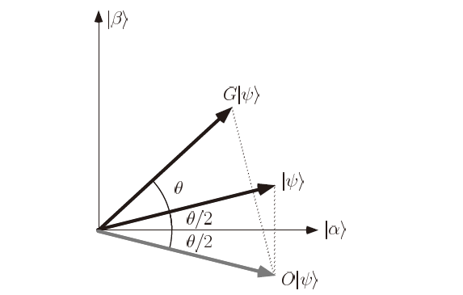
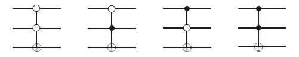
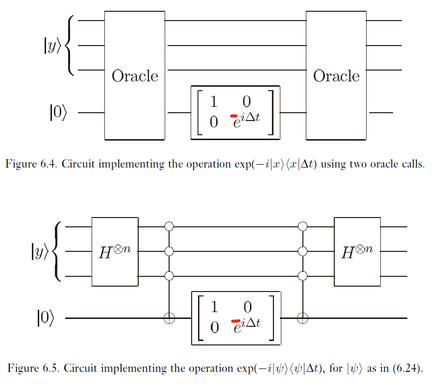
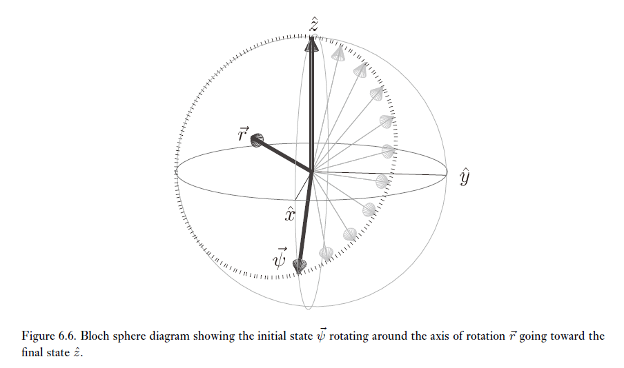
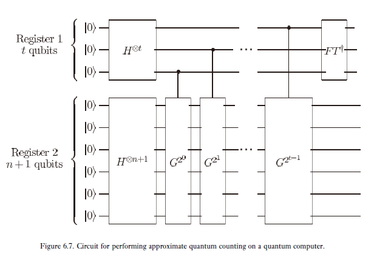
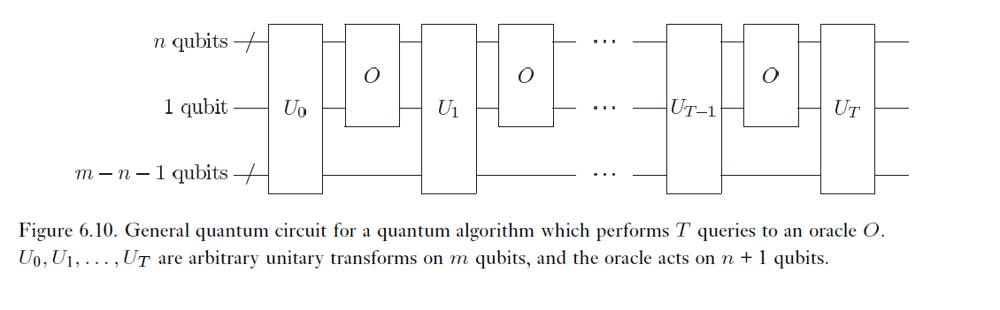

因为生着脚，所以要走
量子搜索算法
黑箱（Oracle）
:::info
假设在N个元素的搜索空间中进行搜索。我们不关心元素是什么，只关心元素的编号0~N-1。方便起见，规定$N=2^n$。假设搜索共有M个解，$1\leq M\leq N$。
:::
该搜索问题的一个特例可以方便地表示为一个输入x的函数f，x是从0到N-1的整数，f的定义是，若x是搜索问题的一个解$f(x)=1$，而如果x不是搜索问题的解，则$f(x)=0$。
设有一个量子oracle可以识别搜索问题的解，Oracle的内部工作方式将在后面讨论，识别的结果通过oracle的一个量子比特给出。更确切低，这个oracle是一个酉算子O，满足：
其中$\oplus$是模二加。因此我们可以通过制备$|x\rang|0\rang$再应用O和测量第二寄存器来判断x是否是搜索问题的一个解。
特别地，在状态$\frac{|0\rang-|1\rang}{\sqrt{2}}$上oracle的作用为
可以看作第二寄存器状态未发生改变，而第一寄存器状态乘了个$(-1)^{f(x)}$。由于第二寄存器状态在量子搜索算法过程中保持为$\frac{|0\rang-|1\rang}{\sqrt{2}}$，因此我们可以简写O的作用为$O|x\rang\rightarrow (-1)^{f(x)}|x\rang$
我们说oracle 通过改变解的相位标记了搜索问题的解。对有M个解的N元搜索问题，实际上只需要在量子计算机上应用搜索oracle$O(\sqrt{N/M})$次。
- 以上讨论是基于我们知道oracle是怎样工作的。那这些讨论有什么意义呢？事实上，++有时候不需要解是哪些，我们就可以识别和判断解++。
过程
- 搜索算法运行的框架如下图所示。

oracle的工作可能需要附加的工作量子比特，但是算法的目的是用最少的oracle应用次数求出搜索问题的一个解。
其中，量子搜索算法由反复应用记作$G$的被称为Grover迭代或Grover算子的量子子程序组成。Grover迭代的量子线路如下图：

可分为四步：
- 应用oracle O；
- 应用Hadamard变换$H^{\otimes n}$；
- 在计算机上执行条件相移，使$|0\rang$以外每个计算基态获得-1的相位：$(2|0\rang\lang 0|-I)|x\rang\rightarrow(-1)^{\delta_{x,0}}|x\rang$；
- 应用Hadamard变换$H^{\otimes n}$。
Grover迭代中的每个运算都可在量子计算机上有效实现。第2，4步的应用Hadamard变换各需要$n=logN$个门，第三步的条件相移利用之后介绍的技术也可以只用$O(n)$个门。第一步oracle的调用消耗需要依赖特定的应用，这个例子中只需要一个单oracle调用。
把2，3，4步的算子结合起来：
记$|\psi\rang=\frac{1}{\sqrt{N}}\sum_{x=0}^{N-1}|x\rang$，则Grover迭代G可写作
应用运算$2|\psi\rang\lang\psi|-I$到一般状态$\sum_{k=0}^{N-1}a_k|k\rang$会得到状态
其中$\lang a\rang=\frac{1}{N}\sum_{k=0}^{N-1}a_k$是均值，因此$2|\psi\rang\lang\psi|-I$有时称为关于均值的反演运算。
几何可视化
事实上，Grover迭代可视为在由开始向量$|\psi\rang$和搜索问题解组成的均匀叠加态张成的二维空间中的一个旋转。
首先，我们定义$\sum_{x}’$求和符号中的x枚举的是搜索问题所有的解，$\sum_{x}’’$枚举的是非搜索问题的解。定义归一化状态：
则有$\sum_{x=0}^{N-1}=\sum_x’+\sum_{x}’’$，因此均匀叠加态：
故量子计算机初态属于$|\alpha\rang$和$|\beta\rang$张成的向量空间。
可以认识到$|\alpha\rang$和$|\beta\rang$是正交的，对于任何一个在$|\alpha\rang,|\beta\rang$所在平面上的向量$a|\alpha\rang+b|\beta\rang$，O作用在上面就是：
几何上上就是把$a|\alpha\rang+b|\beta\rang$关于$|\alpha\rang$对称一下。不妨令$cos\frac{\theta}{2}=\sqrt{\frac{N-M}{N}}$，则$|\psi\rang=cos\frac{\theta}{2}|\alpha\rang+sin\frac{\theta}{2}|\beta\rang$，$O|\psi\rang=cos\frac{\theta}{2}|\alpha\rang-sin\frac{\theta}{2}|\beta\rang$。
就是一个三倍角$\frac{\theta}{2}$。画到图上如下：

$G^k|\psi\rang=cos(\frac{2k+1}{2}\theta)|\alpha\rang+sin(\frac{2k+1}{2}\theta)|\beta\rang$不难发现每次迭代就是把状态向量逆时针转$\theta$角，而$\theta$是二倍的$|\psi\rang$与$|\alpha\rang$的夹角。经过$O(\sqrt{N/M})$次后，状态向量将接近$|\beta\rang$（至多偏离$|\beta\rang\frac{\pi}{4}$角）。然后其实对$|\beta\rang$做计算基下的测量得出的就是搜索问题的解，而状态向量离$|\beta\rang$越近，对其测量越大概率得到与$|\beta\rang$重合的解，即搜索问题的解。
例子：下面是在N=4的搜索空间上的量子搜索算法中的Grover迭代一次对应的线路。oracle对除$x_0$外所有的x有$f(x)=0$，而$f(x_0)=1$。通过不同的$x_0$oracle线路也不同。下图是从左到右对应$x_0=0,1,2,3$的oracle：

起初，上面两个量子比特处于状态$|0\rang|0\rang$，下面的量子比特为$|1\rang$。中间的用点框起来的部分实现的是条件相移$2|00\rang\lang 00|-I$。
为得到$x_0$，我们需要应用上图线路多少次？
其实可以看出$\theta=2arctan\sqrt{\frac{M}{N-M}}=2arctan\frac{1}{\sqrt{3}}=\frac{\pi}{3}$，所以迭代一次就可以获得$|\beta\rang$。迭代一次后对上面两个量子比特进行测量就可以得出$x_0$。与之对照，经典计算机四选一的oracle平均需要2.25次调用。
注：其实这里可能产生疑问，最后一个量子比特全程没有参与感，为啥要用它？实际上，它参与了最后的测量。最后对整个系统测量算子为$|001\rang\lang001|,|011\rang\lang011|,|101\rang\lang101|,|111\rang\lang 111|$，即我们需要保证下面一个量子比特状态为$|1\rang$（和输入值一样）的情况下去测量前两个量子比特。
性能
系统初态为$|\psi\rang=\sqrt{\frac{N-M}{N}}|\alpha\rang+\sqrt{\frac{M}{N}}|\beta\rang$，与$|\beta\rang$夹角成$arccos\sqrt{\frac{M}{N}}$，所以实际上需要迭代$\lfloor\frac{arccos\sqrt{M/N}}{\theta}\rceil$次，把$|\psi\rang$转到离$|\beta\rang$的$\theta/2\leq\pi/4$范围内。于是对状态在计算基中的观测，将至少以$1/2$的概率是在$|\beta\rang$部分，即得到搜索的一个解。
特别地，当$M<<N$时，我们有$\theta\approx sin\theta=2\sqrt{M/N}$，故最终误差至多是$\theta/2\approx\sqrt{M/N}$。事实上，需要迭代的次数和精度分析并不取决于解具体是什么只取决于解的个数，因此知道M就可以搜索算法分析误差。
给出了需要迭代次数一个非常漂亮的上界，即$R=O(\sqrt{N/M})$次Grover迭代，oracle调用，才能以最高的概率得到搜索问题的一个解。
特别地，当$M\geq N/2$时，即$\theta/2\geq\pi/4$时，我们可以一开始就随机从搜索空间中选择一个元检测它是否为一个解。此时成功概率已经至少为$1/2$。同样，我们也可以增加N个均不为解的元到搜索空间，使得解的个数一定不到新搜索空间大小的一半。这可以通过增加一个单量子比特$|q\rang$都搜索指标，把要搜索的元数目加倍到$2N$实现。构造一个增广oracle $O’$，因为引进$|q\rang$而使得$O’$增加的元素全部置为0即可。
- 然而在实际问题中，我们必须懂得如何实现oracle。因此在我们考虑的每个实际问题中，我们都给出oracle实现的具体描述。
作为量子仿真的量子搜索
我们考虑构造一个Hamilton量，使得在自然选择的演化下，在一定时间内就可以实现初态$|\psi\rang$到解$|x\rang$的演化。
例如$H=|x\rang\lang x|+|\psi\rang\lang\psi|$，根据薛定谔方程的解$|\psi’\rang=exp(-iHt)|\psi\rang$，在极短时间$t$内，将$exp(-iHt)$泰勒展开保留前两项：
即$|\psi\rang$稍微转了一部分去$|x\rang$。
但当t不再是小量时，我们做一下全程分析看是否存在t，使得$exp(-iHt)|\psi\rang=|x\rang$。
考虑$|\psi\rang$和$|x\rang$张成的二维空间，$|y\rang$是二维空间上和$|x\rang$正交的单位向量。不妨设$|\psi\rang=\alpha|x\rang+\beta|y\rang$，假定选择合适的$|x\rang,|y\rang$相位，使得$\alpha,\beta$是非负实数（即把$\alpha=re^{i\theta}$的$e^{i\theta}$部分作为相位乘到$|x\rang$上），且$\alpha^2+\beta^2=1$。此时，我们考虑在$|x\rang,|y\rang$基中，（即令$|x\rang=\begin{pmatrix}1\\0\end{pmatrix},|y\rang=\begin{pmatrix}0\\1\end{pmatrix}$，有：
所以
在$|x\rang,|y\rang$基下，$|\psi\rang=\begin{pmatrix}\alpha\ \beta\end{pmatrix}$，所以有$(\beta X+\alpha Z)|\psi\rang=\begin{pmatrix}1\\0\end{pmatrix}=|x\rang$。忽略全局相位$e^{-it}$，于是过了时间t，系统进入
于是在$t=\frac{\pi}{2\alpha}$时刻，对系统的观测将以概率1产生结果$|x\rang$，即我们找到了解。
不幸的是，观测时间$t$依赖$|\psi\rang$在$|x\rang$方向上的分量$\alpha$，从而依赖$|x\rang$，而$|x\rang$又是我们要求的。
实际上，考虑到搜索解$x$一定是一个长度为n的二进制串，因此$|x\rang$不可能是叠加态，而是$n$量子比特标准正交计算基下的一个（例如$|x\rang$可以为$|010\rang$，但不能为$\frac{1}{\sqrt{2}}|110\rang+\frac{1}{\sqrt{2}}|100\rang$）。所以我们可以制备均匀叠加态$|\psi\rang=\frac{1}{\sqrt{N}}\sum_{x=0}^{N-1}|x\rang$，这样对于任意一个$|x\rang$，$|\psi\rang$在$|x\rang$上的投影$\alpha\equiv\lang\psi|x\rang=\frac{1}{\sqrt{N}}$，$t=\pi\sqrt{N/2}$不依赖于$x$的值。而且均匀叠加态是很好用$H$门制造出来。
现在我们用一个量子线路来模拟$H=|x\rang\lang x|+|\psi\rang\lang\psi|$。下面两个图便分别实现了$I-i\Delta t|x\rang\lang x|\approx exp(-i|x\rang\lang x|\Delta t)$和$I-i\Delta t|\psi\rang\lang\psi |\approx exp(-i|\psi\rang\lang\psi|\Delta t)$，其中$\Delta t$是个小量。在作业中我验证了其正确性。注意图中$e^{i\Delta t}$应换为$e^{-i\Delta t}$。

又因为$e^{-iHt}=e^{-i|x\rang\lang x|t}e^{-i|\psi\rang\lang\psi| t}$，所以我们可以以$\Delta t$的步长交替使用$e^{-i|x\rang\lang x|\Delta t}$和$e^{-i|\psi\rang\lang\psi |\Delta t}$，每次使用上面线路时实际上和真正的$e^{-i|x\rang\lang x|\Delta t},e^{-i|\psi\rang\lang\psi |\Delta t}$有$O(\Delta t^2)$的误差（因为我只把$e^{-i|x\rang\lang x|\Delta t}=I-i\Delta t|x\rang\lang x$展开到一阶小量）
而需要的总步数为$t/\Delta t=\pi\sqrt{N/2}/\Delta t=O(\sqrt{N}/\Delta t)$，误差在$O(\Delta t^2\times \sqrt{N}/\Delta t)=O(\Delta t\sqrt{N})$。
因此如果想让误差为$O(1)$，可以选择$\Delta t$~$O(1/\sqrt{N})$
进一步地，如果我们实现的线路更为出色，可以以$O(\Delta t^3)$的精度去实现$e^{-i|x\rang\lang x|\Delta t}$和$e^{-i|\psi\rang\lang\psi |\Delta t}$，那么积累误差会更小。
那么考虑算子$U(\Delta t)=exp(-i|x\rang\lang x|\Delta t)exp(-i|\psi\rang\lang\psi|\Delta t)$，显然它只有作用在$|x\rang,|\psi\rang$张成的二维平面上时是不平凡的。
在基$|x\rang,|y\rang$讨论下，$|x\rang\lang x|=(I+Z)/2,|\psi\rang\lang\psi|=(I+\overrightarrow{\psi}\cdot\overrightarrow{\sigma})/2$，其中$\overrightarrow{\psi}=(2\alpha\beta,0,\alpha^2-\beta^2)$。所以在Bloch球面上，$|x\rang$对应$(0,0,1)$，$|y\rang$对应$(0,0,-1)$，$|\psi\rang$对应$(2\alpha\beta,0,\alpha^2-\beta^2)$。`
不难验证（好吧其实挺烦），$U(\Delta t)=exp(-i|x\rang\lang x|\Delta t)exp(-i|\psi\rang\lang\psi|\Delta t)$实际上是先绕$\hat{z}$旋转$\Delta t$，再绕$\overrightarrow{\psi}$转$\Delta t$。合成后：
所以就是绕$\overrightarrow{r}=cos\frac{\Delta t}{2}\frac{\overrightarrow{\psi}+\hat{z}}{2}+sin\frac{\Delta t}{2}\frac{\overrightarrow{\psi}\times\hat{z}}{2}$（提个2是为了归一化）
转$2arccos(cos^2\frac{\Delta t}{2}-sin^2\frac{\Delta t}{2}\overrightarrow{\psi}\cdot\hat{z})=2arccos(1-\frac{2}{N}sin^2\frac{\Delta t}{2})$。下图为一个形象描述：

为了使每次转的角度尽量大，我们可以选择$\Delta t=\pi$，这这样每次就转$2arccos(1-2/N)\approx 4/\sqrt{N}$。次数需要的总步数为$\pi\sqrt{N/2}/\pi=O(\sqrt{N})$。实际上，取$\Delta t=\pi$时已经等价于原始的量子搜索算法。因为$e^{-i\pi|\psi\rang\lang\psi|}=I-2|\psi\rang\lang\psi |$。并且除了一个不重要的相位因子，这些算子就等同于构成Grover迭代的步骤。
给定要解的问题，包含量子算法输入和输出的描述
猜测一个Hamilton量来解决问题，并验证其可用
寻找一个模拟该Hamilton量的过程
分析消耗的资源
量子算法就是量子仿真。
量子计数
:::info
在事先未知的情况下，多快可以确定N元搜索问题的解的个数M？
:::
显然经典计算机上需要$\varTheta(N)$次对oracle的调用来确定M。
在量子计算机上，有可能通过把Grover迭代和基于量子Fourier变换的相位估计结合，以比经典计算机快得多的方式估计解的数目。
设$|a\rang,|b\rang$是$|\alpha\rang,|\beta\rang$张成的平面中Grover迭代算子G对应的两个特征向量，令$\theta$表示G作用效果的旋转角，因为$G=\begin{pmatrix}cos\theta&-sin\theta\\sin\theta&cos\theta\end{pmatrix}$，所以其两个特征值为$e^{i\theta},e^{i(2\pi-\theta)}$。假设O已经被扩充（但G和O还是只作用于$|\alpha\rang,|\beta\rang$张成的平面上的向量是非平凡的），即搜索空间规模被扩大到$2N$，并保证$sin\frac{\theta}{2}=\sqrt{\frac{M}{2N}}$。
++事实上，通过相位估计在G上的应用，可以让我们估计$\theta$，从而估计解的个数。++
下图是一个至少以$1-\epsilon$的成功概率估计$\theta$到m比特精度。

其中，第一寄存器共有$t=m+\lceil log(2+\frac{1}{2\epsilon})\rceil$个量子比特，第二个寄存器包含$n+1$个量子比特。注意到第二寄存器上来也制备了均匀叠加态$|\psi\rang$，因为保证了$|\psi\rang$一定在$|\alpha\rang,|\beta\rang$平面上，因此它一定是$|a\rang,|b\rang$的叠加，因此最后测出来以一定概率是$\theta$的近似，一定概率是$2\pi-\theta$的近似。而且精度高达$|\Delta\theta|\leq 2^{-m}$，且$sin\frac{\theta}{2}=sin\frac{2\pi-\theta}{2}$。
又因为$\sin^2\frac{\theta}{2}=\frac{M}{2N}$，所以$\frac{|\Delta M|}{2N}=|sin^2\frac{\theta+\Delta\theta}{2}-sin^2\frac{\theta}{2}|=(\sin\frac{\theta+\Delta\theta}{2}+sin\frac{\theta}{2})|sin\frac{\theta+\Delta\theta}{2}-sin\frac{\theta}{2}|$
又因为$|sin\frac{\theta+\Delta\theta}{2}-sin\frac{\theta}{2}|\leq\frac{|\Delta\theta|}{2},|sin\frac{\theta+\Delta\theta}{2}|<sin(\theta/2)+|\Delta\theta|/2$，故$\frac{|\Delta M|}{2N}<(2sin\frac{\theta}{2}+\frac{|\Delta\theta|}{2})\frac{|\Delta\theta|}{2}$
再把$sin^2\frac{\theta}{2}=\frac{M}{2N},|\Delta\theta|\leq 2^{-m}$代入，有$|\Delta M|<(\sqrt{2MN}+\frac{N}{2^{m+1}})2^{-m}$
例如我们取$m=\lceil\frac{n}{2}\rceil+1$，且$\epsilon=1/6$，则有$t=\lceil\frac{n}{2}\rceil+3$。注意此时线路图中虽然好像有快速幂的样子，但实则和前面不同（前面的算子U满足$U|x\rang=|xy\rang$是个乘法)。实际上$G^{2^i}$就是很朴素地连续作用$2^i$个G门。因此总共需要$O(2^{t})$个G门，即$O(\sqrt{N})$个Grover迭代、oracle调用。此时$|\Delta M|<\sqrt{M/2}+1/4=O(\sqrt{M})$
特别地，若$M=0$，则$|\Delta M|<1/4$，于是算法至少以$1-\epsilon=5/6$的概率给出估计0。反之，若$M\neq 0$，则以$5/6$的概率给出M不是0的估计。这样在判断NP问题是否有解时非常有用。
量子计数的另一个应用是当解数目M未知时，找出问题的一个解。之前朴素的黑箱量子搜索的Grover迭代次数需要依赖M，但是我们现在可以先用相位估计估计M，再代入量子搜索。
在之前的量子搜索中，我们分析了通过不断地Grover迭代和旋转，初状态$|\psi\rang$可以旋转至离末状态$|x\rang$角度$\theta/2\leq\pi/4$范围里。此时因为量子技术过程中的相位估计会对$\theta$估计不准确，因此$|\psi\rang$旋转后最多最多偏离$|x\rang$角$\frac{\pi}{4}(1+\frac{\Delta \theta}{\theta})$。
判断Hamilton圈问题的加速
:::info
HC问题为确定给定的n个顶点的图是否具有一个Hamilton圈。这个问题属于NP-complete问题，一般认为在经典计算机上不可解。
:::
朴素算法是遍历顶点的全排列进行分析。但这显然很差劲。事实上，NP类中的任何问题都可以以类似的方式来解：如果有$\omega(n)$比特给定的证据，其中$\omega(n)$为n的多项式，如果解存在，则可以遍历$2^{\omega(n)}$则一定可以得出解。
然而使用量子算法，我们可以令$m\equiv\lceil logn\rceil$，然后将搜索空间用$mn$个量子比特状态来表示：$|v_1…v_n\rang$，其中$|v_i\rang$是一个m量子比特状态用于表示第i个顶点的编号。那么黑箱oracle就要实现：
当我们有图的描述时，这样的oracle是容易实现的。可以取一个能判断图中Hamilton圈的多项式规模的电路，然后使用量子搜索算法。
事实上，此时我们需要调用oracle $O(\sqrt{N})=O(2^{t/2})=O(2^{mn/2})$次来判断是否有Hamilton圈。
量子搜索算法渐进于经典算法平方根的运算次数。
非结构化数据库的量子搜索
:::info
给你一个包含一千个名字的清单，问你“Perth Rose”出现在名单上第几个？
:::
- 如果遍历搜索，平均需要检查500个名字才能找到。但用量子数据库搜索算法可以加速这个过程。
设我们有一个包含$N\equiv 2^n$个元的数据库，每个元的长度为l比特，这些元记为$d_1,…,d_N$，我们希望确定一个特定的l比特串s是否在数据库中。
假设我们的量子计算机由CPU和内存这两个单元组成，其中CPU有四个寄存器：
- 一个初始化为$|0\rang$的n量子比特索引寄存器
- 一个初始化为$|s\rang$，并在整个过程中保持该状态的l量子比特寄存器
- 一个初始化为$|0\rang$的l量子比特数据寄存器
- 一个初始化为$(|0\rang-|1\rang)/\sqrt{2}$的1量子比特寄存器
而内存则为$2^n$个单元的经典内存，每个单元有l比特。然而与经典内存不同的是，每个单元的索引x可以处于多重值的叠加，即他不再是离散的地址数字，而且这个索引$|x\rang$对应的也是单元值的叠加$|d_x\rang$。
例如现在CPU的索引寄存器在状态$|x\rang$，且数据寄存器处在状态$|d\rang$。则$|x\rang$索引的内容$d_x$加载到数据寄存器则是$|d\rang\rightarrow|d\oplus d_x\rang$，其中$\oplus$表示异或。实现量子搜索算法的关键在于oracle的实现，它必须翻转在内存中定位s索引的相位。
设CPU处于状态$|x\rang|s\rang|0\rang\frac{|0\rang-|1\rang}{\sqrt{2}}$
应用LOAD操作，载入数据使进入状态$\rightarrow |x\rang|s\rang|d_x\rang\frac{|0\rang-|1\rang}{\sqrt{2}}$
这时应用oracle比较第二，第三寄存器，如果相同则应用比特翻转到第四寄存器，否则不变：
然后再应用LOAD操作，把数据寄存器还原$\rightarrow|x\rang|s\rang|0\rang\frac{|0\rang-|1\rang}{\sqrt{2}}$
其实整个过程我们发现寄存器之间都是独立的没有纠缠在一起，而且二三四寄存器始终没有变化就一直是在改变第一寄存器的相位。此时我们就有了一个很好的oracle，然后我们可以把第一寄存器制备初态$|\psi\rang$，然后利用Grover迭代量子搜索，在$O(\sqrt{2^n})$次LOAD操作后第一寄存器旋转至s对应的索引$|x_s\rang$的附近，从而得出解。
不难发现上述过程中其实内存部分是可以经典实现的（索引也可以是经典的，只不过在LOAD使LOAD一个叠加态的索引）。说明只要量子地实现CPU和LOAD过程量子搜索算法也可以用于搜索经典数据库。如果维持单调字典序的话，一个经典的数据库可以在$O(logN)$时间内定位一个元。然后我们给出的方案需要$O(NlogN)$个量子开关，实际上和经典数据结构没啥区别，所以实际上，量子搜索算法的主要用途还是用于困难问题的解。数据库的话经典数据结构已经很成熟了。
搜索算法的最优性
我们要好像吃饱了撑的证明不可能调用oracle少于$O(\sqrt{N})$次就在N元数据库里搜索，因此上面说的算法是最优的。
设算法从状态$|\psi\rang$出发，考虑搜索问题只有唯一解的情况。我们被允许使用一个对解产生(-1)相移而其他状态不变的oracle $O_x=I-2|x\rang\lang x|$。我们假设算法从$|\psi\rang$出发并恰好应用k次$O_x$，并在oracle运算之间穿插任意酉运算$U_1,U_2,…,U_k$，定义:
我们的目的是估计量$D_k=\sum_x|||\psi_k^x\rang-|\psi_k\rang||^2$，即同一个状态在酉运算的操作下，加不加oracle的差别是否很大。如果$D_k$很小，则说明我们的oracle没起到什么效果，那么其实在搜索过程中，$|\psi\rang$也就以很小的概率最后转到离$|x\rang$很近。
下面的证明过程省略狄拉克符号的ket，用$\psi$表示向量$|\psi\rang$。
首先我们证明$D_k\leq 4k^2$。显然这对k=0成立，其中$D_k=0$，然后:
用柯西不等式$D_{k+1}\leq D_k+4+4\sqrt{\sum_x{||\psi_k^x-\psi_k||^2\sum_x|\lang x|\psi_k\rang|^2}}=D_k+4+4\sqrt{D_k}$
根据归纳假设$D_{k+1}\leq 4k^2+4+8k=4(k+1)^2$
然后我们需要证明，事实上只有当$D_k$是$\Omega(N)$时，成功概率才是高的。
假设要求对所有x都有$|\lang x|\psi_k^x\rang|^2\geq1/2$，即要求无论解是什么，在搜索后我们的$|\psi_k^x\rang$必须至少以$1/2$的概率测量得到$|x\rang$。
定义$E_k\equiv\sum_x|||\psi_k^x-x||^2$，则$E_k\leq(2-\sqrt{2})N$，下面证明$E_k$是$\Omega(N)$的。
定义$F_k\equiv\sum_x||x-\psi_k||^2$，有
由柯西不等式：$\sum_x||\psi_k^x-x||||x-\psi_k||\leq\sqrt{E_kF_k}$，于是
而其实可以证明，$E_k\leq(2-\sqrt{2})N<2N,F_k\geq 2n-2\sqrt{n}$，于是$d_k> (\sqrt{2}-\sqrt{2-\sqrt{2}})^2N$
所以对于任意常数$c<(\sqrt{2}-\sqrt{2-\sqrt{2}})^2$，都有$D_k>cN$。又因为$D_k\leq 4k^2$，所以
所以oracle调用次数k是$\Omega(\sqrt{N})$的我们才可以保证$D_k$足够大，$|\psi_k^x\rang$以$\geq 1/2$的概率得到解。
- 然而这也证明了简单量子搜索的极限，即它的调用oracle次数仍然是$O(2^{\omega(n)})$的，其中$\omega(n)$是关于n的一个多项式。
许多研究者相信，++NP完全问题苦难的本质在于它们搜索空间本质上是无结构的，并且解决这类问题的（精确到一个多项式因子）的最好方法是采用搜索的办法++。然而这也只是片面之言，或许NP完全问题仍可能具有某些我们还未发现的结构。
被普遍视为属于难度介于P和NP完全之间的NPI类的因子问题，量子计算机可以很好地求解其的关键在于利用了该问题的一个隐含结构，即可归约为求阶问题。然而经典算法至今也没有很好的求阶算法。还有许多被怀疑属于NPI类的问题（如图同构）甚至NP完全问题都被怀疑有类似结构。
黑箱算法的极限
:::info
给定一个函数f，判断是否存在x，使得$f(x)=1$？
:::
- 实际上，这个问题的难度和找出一个x使得$f(x)=1$是一样的。其实我们就是判断Boolean函数$F(f)=f(0)\vee…\vee f(N-1)$是否为1。推广下，我们希望$F(f)$是个任意Boolean函数，即里面的元为$f(0),…,f(N-1)$，运算符可以是与，或，非，异或等等。给定实现f的黑箱，如何快速确定F的值？复杂度分析基于oracle的调用次数。
确定性查询复杂性$D(F)$定义为经典计算机完成F的确定性计算，需要调用oracle的最少次数。
相应的量子复杂性$Q_E(F)$是一台量子计算机为确定性计算F需要的最少oracle调用次数。因为量子计算机的概率输出特性，一个更有意义的量是有界误差性$Q_2(F)$，即量子计算机以至少$2/3$的概率输出F的值，需要最少调用oracle的次数。（$2/3$只是任取的一个大于0.5的数，这也就可以通过重复来逼近1）我们可以介绍一种多项式的方法计算F。
多项式方法基于表示Boolean函数的最小阶实多线性多项式的性质。下面要考虑的所有多项式是$f(k)\in\{0,1\}$的函数，且因为$f(k)^2=f(k)$，所以多项式是多线性的（即多项式中每个变量都是一次的，因为幂等），我们构造一个多项式：
其中，$X_k=f(k),X$表示函数的取值集合，Y是一个长度为N的二进制串，即也可以表示为函数f的取值集合。上面右式表示当且仅当$Y_k\equiv X_k$才等于$F(Y)=F(X)$。于是我们构造出了个$p:R^N\rightarrow R$来表示F，且$\forall X,p(X)=F(X)$。实际上我们就是把Boolean函数用一般多项式表示。例如$F(X)=X_0\vee X_1,p(X)=1-(X_0-1)(X_1-1),p(X)=F(X)$。
其实，Boolean函数的多项式表示的最小次数是唯一的（上面的p不一定是最小次数）。譬如$F(X)=(X_0\vee X_1)\oplus X_2$的话，就有$p(X)=(1-(1-X_0)(1-X_1))+X_2$为二次。这个可以证明但我不会（。可以感性理解一下，事实上位运算和加法，乘法是等价的。而且一个位运算对应次数翻倍。即有：
想一想应该加法乘法域和位运算域是同构的。所以我们可以把加法乘法和位运算相互转换，例如就把与，或，异或转换为加法和乘法后的多项式次数是很固定的，一个与，或，非就代表次数需要左右相加。
但由于这里F我们不知道里面有什么位运算和结构，所以我记其对应的多项式最小次数为$deg(F)$。事实上，若F里面全是或，即把N个数或起来，则$deg(OR)=N$，同理$deg(AND)=N,deg(XOR)=N$。
然后已经证明了$D(F)\leq 2deg(F)^4$（这个是事实，但相当难证明）。思考下，发现其实可以拓展$p(X)$。因为我们知道$F(X)$的值一定是0或1，所以如果$\forall X,|p(X)-F(X)|\leq 1/3$，我们也可以通过$p(X)$来得出$F(X)$。此时我们说$p$近似$F$。用$\widetilde{deg}(F)$表示这种近似多项式的最小次数，目前已经得到证明的有：
这是目前已知最好结果，然后证明过程都略略略了。
回到黑箱。我们本来想判断黑箱实现的函数f是否有解，然后转化为求$F(X)$。其实我们可以证明，$F(X)$的近似多项式$p(X)$可以用量子算法得到。
记执行T次oracle调用的量子算法Q的输出为$\sum_{k=0}^{N-1}c_k|k\rang$，而Q实际上是任意一个算法，也就是任意作用了一些门和oracle。其一般形式为：$Q=U_0OU_1O…U_{T-1}OU_T$，如下图：

考虑算法Q作用在前$n+1$个量子比特上，不失一般性还可以允许其引入一些工作量子比特（虽然不影响什么）。
事实上，我们考虑任意一个状态$|\psi_{in}\rang=\sum_{i,j}a_{i0j}|i\rang|0\rang|j\rang+a_{i1j}|i\rang|1\rang|j\rang$，它在经过一个oracle后变为：
我们发现状态$|i0j\rang,|i1j\rang$前面的概率幅度关于$X_i$的次数从0便变成了1，实际上就是涨了个次数。而作用任何酉运算都不会改变概率幅度关于$X_i$的次数（所以说引入什么量子比特都不重要，最后面那个$|j\rang$属实没啥贡献）
于是经过了T次调用，概率幅度的阶已经为T了，而且正好为T。我们考虑对算法输出$\sum_{k=0}^{N-1}c_k|k\rang$进行测量，则概率$P_k(X)=|c_k|^2$就是关于X的2T次实多项式。
假设我们有个量子算法Q可以使得对算法输出$\sum_{k=0}^{N-1}c_k|k\rang$进行测量可以正确地得出$F(X)$的值（即输出不是$|0\rang$就是$|1\rang$）此时$F(X)$就等于得到状态$|0…01\rang$的概率，要么是0要么是1。故其也可以表示为$|c_1|^2$，关于X的次数$\leq 2T$。所以有
上式表示调用oracle次数。同样，若$Q$的输出结果是$|0\rang,|1\rang$的叠加态，即会以很小的误差概率测出错误的$F(X)$，此时$|c_1|^2$是$F(X)$的近似，即有：
再结合$D(F)\leq 2deg(F)^4,D(F)\leq 216\widetilde{deg}(F)^6$，得到
这意味着黑箱算法对于经典算法最多只能进行多项式加速，因为如果希望得出结果的概率$>1/2$根据之前的推导$D(F)\geq(\sqrt{2}-\sqrt{2-\sqrt{2}})^2N$所以$Q_E(F),Q_2(F)$也至少是关于N多项式级别的，原因也在于常见的位运算函数（与或异或）的$deg(F),\widetilde{deg}(F)$是$\Omega(N)$的。只有对实现f的oracle黑箱有更进一步的结构了解才有可能对经典算法进行指数加速。